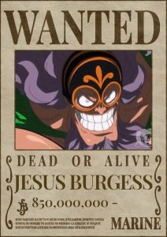
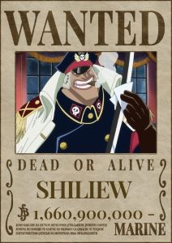
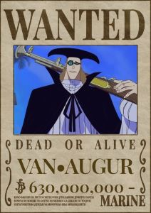
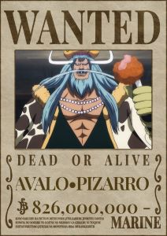
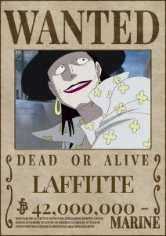
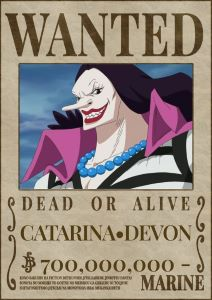
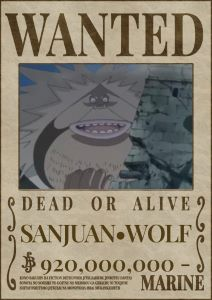
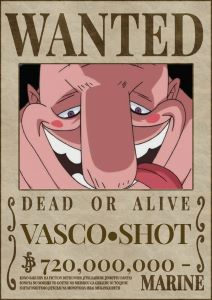
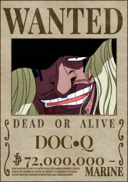
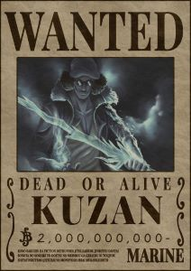

<div class="container">
  <article>
    <h1>Marshal D. Teach - Barba Negra</h1>
    
    <p>
      Barba Negra começou como um membro da tripulação de Barba Branca. Sua
      ambição era se tornar o pirata mais poderoso e alcançar o posto de Rei dos
      Piratas, objetivo que o levou a trair e matar seu antigo capitão para
      obter a Fruta do Diabo Yami Yami no Mi, que lhe concedeu poderes das
      trevas. Após a traição a Barba Branca, Marshall D. Teach formou sua
      própria tripulação, os Piratas do Barba Negra. Com uma tripulação leal e
      poderosa, ele rapidamente ganhou notoriedade nos mares e se tornou um dos
      Yonkou, os quatro piratas mais poderosos do mundo de One Piece.
    </p>

    <h2>Yami Yami no Mi</h2>
    
    <p>
      É uma Fruta do Diabo do tipo Logia, e é conhecida como a Fruta da
      Escuridão, o que significa que seu usuário pode transformar seu corpo em
      um elemento natural, neste caso, a escuridão. O usuário da Yami Yami no Mi
      pode criar, controlar e manipular a escuridão à vontade. Isso não apenas
      concede a capacidade de absorver tudo, incluindo ataques físicos e
      projéteis, mas também permite que o usuário reduza a visibilidade em uma
      área ao seu redor, criando escuridão total. Uma característica única e
      extremamente poderosa da Yami Yami no Mi é sua capacidade de "anular" os
      poderes das outras Frutas do Diabo, incluindo os tipos Logia, Paramecia e
      Zoan. Quando o usuário entra em contato com um usuário de Akuma no Mi, a
      escuridão parece "engolir" o poder do oponente.
    </p>

    <h2>Bando Piratas Barba Negra</h2>
    
    <p>
      Os Piratas do Barba Negra são uma tripulação pirata extremamente infame e
      poderosa liderada por Marshall D. Teach, mais conhecido como "Barba
      Negra". Eles se destacam por possuírem algumas das Akuma no Mi mais fortes
      em One Piece.
    </p>
    <p>
      Eles são uma das maiores ameaças graças à sua determinação implacável e à
      diversidade de habilidades de seus membros. Seu líder, Barba Negra, é um
      dos personagens mais formidáveis e ambiciosos da série, e sua tripulação
      continua a ser uma presença temível nos mares.
      <br />
      <br />
      Seus principais subordinados são:
    </p>
    <div class="imediatos barbaNegra">
      
      
      
      
      
      
      
      
      
      
    </div>
  </article>
</div>
